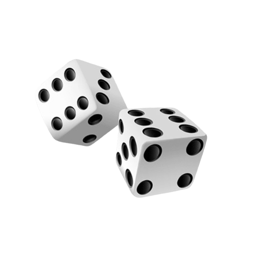

Bienvenue au Carré des jeux
Le Carré des jeux est un bar récemment ouvert à Paris, qui se distingue par son ambiance à la fois
moderne et
conviviale.
Cet établissement unique propose non seulement une large sélection de cocktails
créatifs
et
de boissons raffinées, mais aussi des événements réguliers tels que des concerts live, créant ainsi
une
atmosphère dynamique et animée.
Pour les amateurs de jeux, le bar met également à disposition
une
variété de jeux de société, permettant aux visiteurs de se divertir entre amis tout en dégustant
leurs
boissons.
Que ce soit pour une soirée musicale ou un moment de détente autour d’un jeu, Carré
des jeux
offre un lieu parfait pour passer des soirées mémorables dans la capitale.

Bar, concert et jeux de société !
Bienvenue au Carré des jeux, le bar parisien où convivialité rime avec festivité !
Viens y découvrir notre
sélection de bières et nos planches gourmandes composées de produits du terroir.Le
week-end, laisse-toi tenter par nos pâtisseries maison !
Envie de t’amuser ?
Avec près d'une centaine de jeux, allant des jeux de société au du jeu d’ambiance et jeu de stratégie,
mais ausi jeu de
comptoire et jeu de cartes
chaque soirée est une nouvelle aventure ! Et pour une expérience encore plus mémorable, ne manque
pas
nos concerts live, où des artistes talentueux animent tes soirées dans une atmosphère chaleureuse et
festive.
Carré des jeux, c’est le spot parfait pour boire un verre, jouer et même profiter de la musique, seul
ou
entre
amis !

🍻 Boissons locales et artisanales 🍻
Au Carré des jeux, nous mettons à l’honneur des boissons artisanales et locales, soigneusement sélectionnées pour éveiller tes papilles. Que ce soit nos bières à la pression, nos vins bio ou nos boissons sans alcool, chaque gorgée est une découverte de petites pépites du terroir. Viens savourer des produits authentiques et de qualité, dans une ambiance chaleureuse et conviviale !

🎲 Jeux de société 🎲
Avec près d'une centaine jeux, le Carré des jeux est le lieu idéal pour des soirées pleines de fun et de stratégie ! Que tu sois amateur de jeux d’ambiance pour rigoler entre amis, de jeux de stratégie pour relever des défis, ou de jeux d’apéro pour accompagner tes boissons, tu trouveras forcément ton bonheur. Plonge dans l’univers du jeu et partage des moments inoubliables !

🎶 Nos Concerts 🎶
Carré des jeux vous propose régulièrement des concerts live pour animer vos soirées et vous faire découvrir des artistes talentueux de la scène locale et nationale. Jazz, rock, rap ou encore électro, il y en a pour tous les goûts !
Profitez d’une ambiance conviviale, d’une bonne bière artisanale et laissez-vous emporter par la musique. Suivez notre programme pour ne rien manquer des prochains événements et préparez-vous à vivre des moments inoubliables en musique !